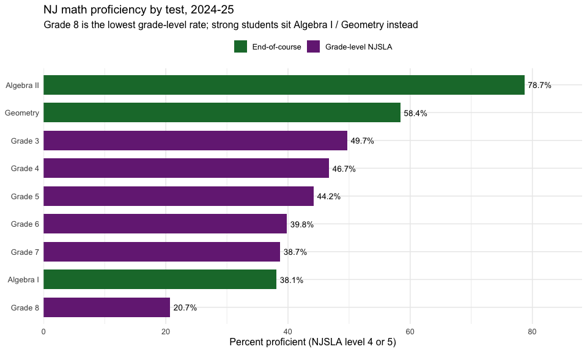
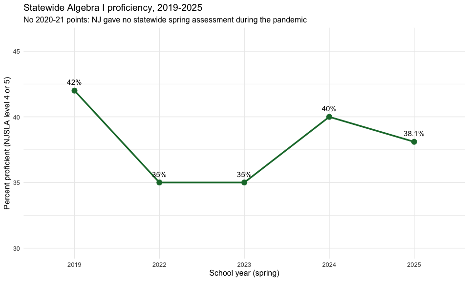
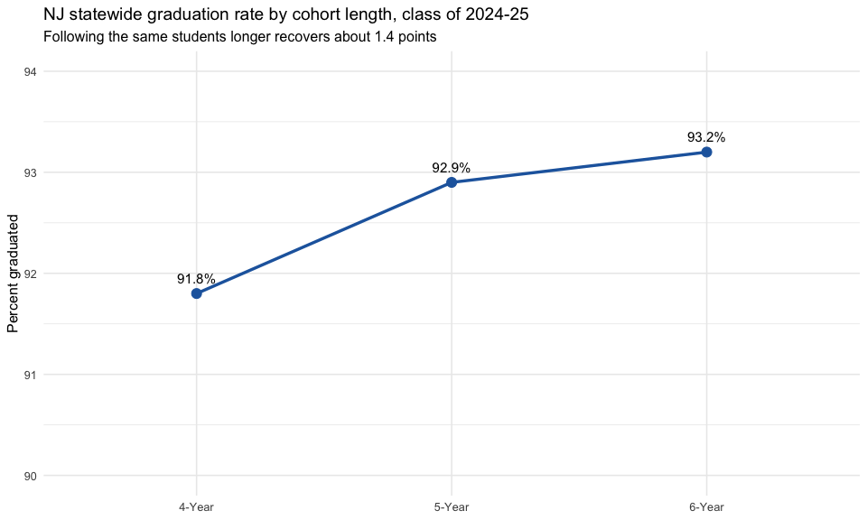
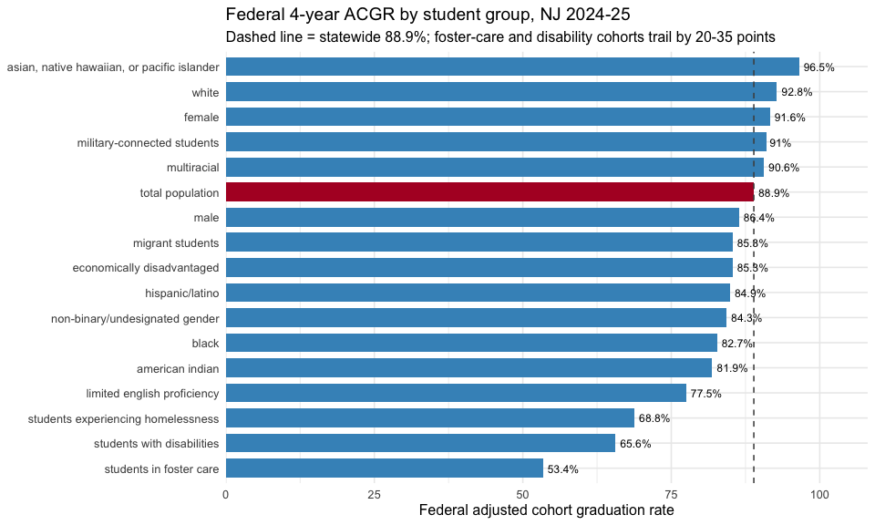

Assessment & Graduation Detail: Behind the Headline Rates
Source:vignettes/nj-assessment-detail.Rmd
nj-assessment-detail.RmdThe 2024-25 School Performance Reports added several sheets that slice assessment and graduation results more finely than the headline proficiency and graduation rates. This vignette uses three of the new fetchers to show how the detail changes the story:
-
fetch_spr_proficiency_by_test()splits NJSLA math by the test a student sat, separating the grade-level tests from the high-school end-of-course exams (Algebra I, Geometry, Algebra II) thatfetch_parcc()folds together. -
fetch_spr_grad_cohort()returns the 4-, 5-, and 6-year graduation cohorts in one frame, so the recovery between them is visible at a glance. -
fetch_spr_fed_grad()reads the federally reported Adjusted Cohort Graduation Rate (ACGR) by student group, the rate used for ESSA accountability.
Two companion fetchers round out the set:
fetch_spr_science_grade() (NJSLA science by grade) and
fetch_spr_elp_progress() (progress toward English language
proficiency). Every value comes straight from the published workbook;
suppressed cells stay NA rather than being guessed.
Grade-8 math looks like a crisis until you see who skipped the test
The single lowest NJSLA math proficiency rate in New Jersey is
Grade 8, at 20.7%. Taken alone that reads like a
collapse. The by-test breakdown explains it: the strongest eighth
graders do not sit the Grade 8 NJSLA at all. They take Algebra
I (38.1% proficient) or Geometry (58.4%) as
accelerated math. What is left in the Grade 8 pool is the
lower-performing remainder, so the grade-level rate is depressed by who
left it, not only by who is in it. The end-of-course exams,
which fetch_parcc() does not separate, are the missing
context.
math_state <- fetch_spr_proficiency_by_test(2025, subject = "math",
level = "district") %>%
filter(is_state, subgroup == "total population")
stopifnot(nrow(math_state) > 0)
math_state <- math_state %>%
mutate(kind = if_else(grade_test %in% c("Algebra I", "Geometry", "Algebra II"),
"End-of-course", "Grade-level NJSLA")) %>%
arrange(proficiency_rate)
# Print-before-plot: the data feeding the chart.
math_state %>% select(grade_test, kind, valid_scores, proficiency_rate)
#> # A tibble: 9 × 4
#> grade_test kind valid_scores proficiency_rate
#> <chr> <chr> <dbl> <dbl>
#> 1 Grade 8 Grade-level NJSLA 66292 20.7
#> 2 Algebra I End-of-course 101493 38.1
#> 3 Grade 7 Grade-level NJSLA 92817 38.7
#> 4 Grade 6 Grade-level NJSLA 96917 39.8
#> 5 Grade 5 Grade-level NJSLA 96345 44.2
#> 6 Grade 4 Grade-level NJSLA 94866 46.7
#> 7 Grade 3 Grade-level NJSLA 95272 49.7
#> 8 Geometry End-of-course 29017 58.4
#> 9 Algebra II End-of-course 7442 78.7
ggplot(math_state, aes(x = reorder(grade_test, proficiency_rate),
y = proficiency_rate, fill = kind)) +
geom_col(width = 0.7) +
geom_text(aes(label = paste0(proficiency_rate, "%")), hjust = -0.15,
size = 3.6) +
coord_flip() +
scale_y_continuous(expand = expansion(mult = c(0, 0.12))) +
scale_fill_manual(values = c("End-of-course" = "#1b7837",
"Grade-level NJSLA" = "#762a83")) +
labs(
title = "NJ math proficiency by test, 2024-25",
subtitle = "Grade 8 is the lowest grade-level rate; strong students sit Algebra I / Geometry instead",
x = NULL,
y = "Percent proficient (NJSLA level 4 or 5)",
fill = NULL
) +
theme_minimal(base_size = 12) +
theme(legend.position = "top")
Algebra I never fully recovered from the pandemic
Because the by-test sheet reaches back to the pre-redesign databases,
fetch_spr_proficiency_by_test() can follow a single test
across years. Statewide Algebra I proficiency was 42% in spring
2019, fell to 35% in 2022 (the first
administration after the COVID testing pause), and has only partly
recovered to 38% in 2025 — still four points below
where it started. There is no 2020 or 2021 point because New Jersey gave
no statewide spring assessment those years; the function errors on those
years rather than inventing a value.
alg_years <- c(2019, 2022, 2023, 2024, 2025)
alg_trend <- lapply(alg_years, function(y) {
fetch_spr_proficiency_by_test(y, subject = "math", level = "district") %>%
filter(is_state, grade_test == "Algebra I",
subgroup == "total population") %>%
transmute(end_year = y, proficiency_rate)
}) %>% bind_rows()
stopifnot(nrow(alg_trend) == length(alg_years))
# Print-before-plot.
alg_trend
#> # A tibble: 5 × 2
#> end_year proficiency_rate
#> <dbl> <dbl>
#> 1 2019 42
#> 2 2022 35
#> 3 2023 35
#> 4 2024 40
#> 5 2025 38.1
ggplot(alg_trend, aes(x = factor(end_year), y = proficiency_rate, group = 1)) +
geom_line(color = "#1b7837", linewidth = 1.2) +
geom_point(color = "#1b7837", size = 3.5) +
geom_text(aes(label = paste0(proficiency_rate, "%")), vjust = -1.1, size = 4) +
scale_y_continuous(limits = c(30, 46)) +
labs(
title = "Statewide Algebra I proficiency, 2019-2025",
subtitle = "No 2020-21 points: NJ gave no statewide spring assessment during the pandemic",
x = "School year (spring)",
y = "Percent proficient (NJSLA level 4 or 5)"
) +
theme_minimal(base_size = 12)
The 6-year cohort quietly recovers students the 4-year rate misses
The headline graduation rate is the 4-year cohort: 91.8% statewide
for the class that should have finished in 2024-25. Following the same
students another two years lifts the rate to 92.9% at five years
and 93.2% at six, while the share still enrolled (“continuing”)
falls from 3.4% to 1.0%. The 6-year cohort also reports a high-school
persistence rate of 94.2% (graduated plus still
enrolled). Combining all three cohort lengths in one frame, which
fetch_spr_grad_cohort() does, makes the slow recovery
legible.
cohort_state <- fetch_spr_grad_cohort(2025, level = "district") %>%
filter(is_state, subgroup == "total population") %>%
select(cohort_type, graduated, continuing, non_continuing, persisting)
stopifnot(nrow(cohort_state) == 3)
# Print-before-plot.
cohort_state
#> # A tibble: 3 × 5
#> cohort_type graduated continuing non_continuing persisting
#> <chr> <dbl> <dbl> <dbl> <dbl>
#> 1 4-Year 91.8 3.4 4.8 NA
#> 2 5-Year 92.9 1.7 5.4 NA
#> 3 6-Year 93.2 1 5.8 94.2
ggplot(cohort_state, aes(x = cohort_type, y = graduated, group = 1)) +
geom_line(color = "#2166ac", linewidth = 1.2) +
geom_point(color = "#2166ac", size = 3.5) +
geom_text(aes(label = paste0(graduated, "%")), vjust = -1.1, size = 4) +
scale_y_continuous(limits = c(90, 94)) +
labs(
title = "NJ statewide graduation rate by cohort length, class of 2024-25",
subtitle = "Following the same students longer recovers about 1.4 points",
x = NULL,
y = "Percent graduated"
) +
theme_minimal(base_size = 12)
The federal graduation rate hides a 43-point equity gap
The federally reported ACGR is a single statewide 4-year number,
88.9%. By student group it spans an enormous range. Students in foster
care graduate at 53.4% and students with disabilities
at 65.6%, against 96.5% for
Asian/Native Hawaiian/Pacific Islander students and
92.8% for white students.
fetch_spr_fed_grad() returns the rate by subgroup and
cohort length, so the gap behind the headline is one filter away.
fed_state <- fetch_spr_fed_grad(2025, level = "district") %>%
filter(is_state, cohort_years == 4,
!is.na(graduation_rate_federal)) %>%
select(subgroup, graduation_rate_federal) %>%
arrange(graduation_rate_federal)
stopifnot(nrow(fed_state) > 0)
total_rate <- fed_state$graduation_rate_federal[fed_state$subgroup == "total population"]
# Print-before-plot.
fed_state
#> # A tibble: 17 × 2
#> subgroup graduation_rate_federal
#> <chr> <dbl>
#> 1 students in foster care 53.4
#> 2 students with disabilities 65.6
#> 3 students experiencing homelessness 68.8
#> 4 limited english proficiency 77.5
#> 5 american indian 81.9
#> 6 black 82.7
#> 7 non-binary/undesignated gender 84.3
#> 8 hispanic/latino 84.9
#> 9 economically disadvantaged 85.3
#> 10 migrant students 85.3
#> 11 male 86.4
#> 12 total population 88.9
#> 13 multiracial 90.6
#> 14 military-connected students 91
#> 15 female 91.6
#> 16 white 92.8
#> 17 asian, native hawaiian, or pacific islander 96.5
fed_plot <- fed_state %>%
mutate(highlight = subgroup == "total population")
ggplot(fed_plot, aes(x = reorder(subgroup, graduation_rate_federal),
y = graduation_rate_federal, fill = highlight)) +
geom_col(width = 0.75) +
geom_hline(yintercept = total_rate, linetype = "dashed", color = "grey30") +
geom_text(aes(label = paste0(graduation_rate_federal, "%")), hjust = -0.15,
size = 3.2) +
coord_flip() +
scale_y_continuous(expand = expansion(mult = c(0, 0.12))) +
scale_fill_manual(values = c("TRUE" = "#b2182b", "FALSE" = "#4393c3"),
guide = "none") +
labs(
title = "Federal 4-year ACGR by student group, NJ 2024-25",
subtitle = "Dashed line = statewide 88.9%; foster-care and disability cohorts trail by 20-35 points",
x = NULL,
y = "Federal adjusted cohort graduation rate"
) +
theme_minimal(base_size = 12)
Notes
-
Coverage. Although these sheets were redesigned in
2024-25, most reach further back through their pre-redesign
predecessors:
fetch_spr_proficiency_by_test()covers 2017-2019 and 2022-2025 (no by-grade/test sheet in the 2020-21 COVID years);fetch_spr_science_grade()covers 2019 and 2021-2025 (NJSLA science began in 2019; 2020 was not tested and the earlier NJASK is a different scale);fetch_spr_grad_cohort()covers 2020-2025 (2020 has only the 4- and 5-year cohorts);fetch_spr_fed_grad()covers 2021-2025 (6-year cohort from 2024).fetch_spr_elp_progress()is 2025-only — the pre-redesign sheet measured a different, target-based quantity, so it is deliberately not mapped. -
Suppression. Cells for fewer than ten students are
masked in the source and return
NA; the 4- and 5-year cohorts report no persistence rate (“n/a”), sopersistingisNAthere. -
Entity values. Each sheet stores its values as a
school/district/state triple (or, in the pre-redesign databases, an
entity column beside a parallel statewide column); these fetchers return
the entity-appropriate value, and the statewide figure is carried on the
is_staterow of district-level output.
sessionInfo()
#> R version 4.6.1 (2026-06-24)
#> Platform: x86_64-pc-linux-gnu
#> Running under: Ubuntu 24.04.4 LTS
#>
#> Matrix products: default
#> BLAS: /usr/lib/x86_64-linux-gnu/openblas-pthread/libblas.so.3
#> LAPACK: /usr/lib/x86_64-linux-gnu/openblas-pthread/libopenblasp-r0.3.26.so; LAPACK version 3.12.0
#>
#> locale:
#> [1] LC_CTYPE=C.UTF-8 LC_NUMERIC=C LC_TIME=C.UTF-8
#> [4] LC_COLLATE=C.UTF-8 LC_MONETARY=C.UTF-8 LC_MESSAGES=C.UTF-8
#> [7] LC_PAPER=C.UTF-8 LC_NAME=C LC_ADDRESS=C
#> [10] LC_TELEPHONE=C LC_MEASUREMENT=C.UTF-8 LC_IDENTIFICATION=C
#>
#> time zone: UTC
#> tzcode source: system (glibc)
#>
#> attached base packages:
#> [1] stats graphics grDevices utils datasets methods base
#>
#> other attached packages:
#> [1] ggplot2_4.0.3 dplyr_1.2.1 njschooldata_0.9.26
#>
#> loaded via a namespace (and not attached):
#> [1] utf8_1.2.6 sass_0.4.10 generics_0.1.4 tidyr_1.3.2
#> [5] stringi_1.8.7 hms_1.1.4 digest_0.6.39 magrittr_2.0.5
#> [9] evaluate_1.0.5 grid_4.6.1 timechange_0.4.0 RColorBrewer_1.1-3
#> [13] fastmap_1.2.0 cellranger_1.1.0 jsonlite_2.0.0 purrr_1.2.2
#> [17] scales_1.4.0 textshaping_1.0.5 jquerylib_0.1.4 cli_3.6.6
#> [21] rlang_1.3.0 withr_3.0.3 cachem_1.1.0 yaml_2.3.12
#> [25] otel_0.2.0 downloader_0.4.1 tools_4.6.1 tzdb_0.5.0
#> [29] vctrs_0.7.3 R6_2.6.1 lifecycle_1.0.5 lubridate_1.9.5
#> [33] snakecase_0.11.1 stringr_1.6.0 fs_2.1.0 ragg_1.5.2
#> [37] janitor_2.2.1 pkgconfig_2.0.3 desc_1.4.3 pkgdown_2.2.1
#> [41] pillar_1.11.1 bslib_0.11.0 gtable_0.3.6 glue_1.8.1
#> [45] systemfonts_1.3.2 xfun_0.60 tibble_3.3.1 tidyselect_1.2.1
#> [49] knitr_1.51 farver_2.1.2 htmltools_0.5.9 labeling_0.4.3
#> [53] rmarkdown_2.31 readr_2.2.0 compiler_4.6.1 S7_0.2.2
#> [57] readxl_1.5.0